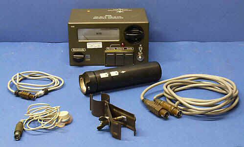
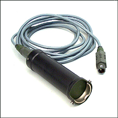
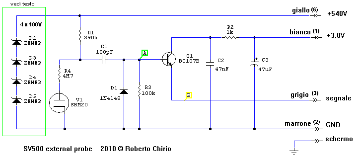
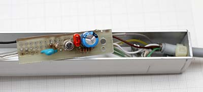
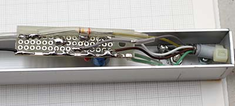
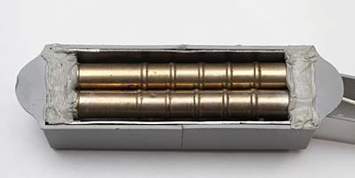
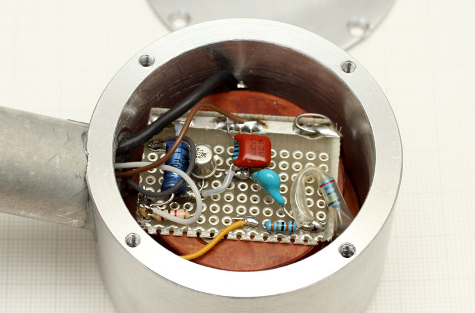
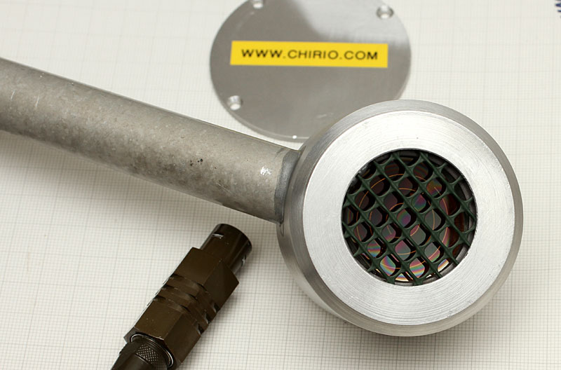
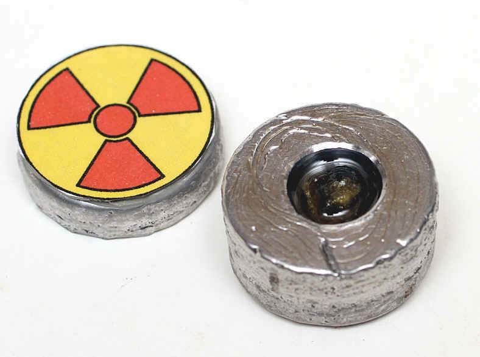

Radioattività
Geiger Counter FAG SV500
Collegamento con 2X sonda SBM20 "Strumentazione" di R.Chirio
Indice della pagina

Ottobre 2010
Questo strumento prodotto in Germania negli anni 80, si presenta con una costruzione molto curata, sono stati utilizzati componenti di ottima qualità, sia per l'elettronica che per i particolari meccanici.
Adatto per applicazioni in ambienti esterni anche molto freddi ed umidi, guarnizioni a tenuta d'acqua e cavi al teflon permettono di mantenere le prestazioni anche alle rigide temperature del Nord.
Il cavo prolunga batterie da la possibilità di estrarre il gruppo batterie e metterle sotto la giacca per sfruttare il calore corporeo.
SV500 manuale e schemi PDF (grazie al proff. A. Scroccaro)
La sonda Gamma fornita nella configurazione base, è una sonda molto dura, in pratica non serve a niente, non rileva gli impulsi di fondo e neppure le deboli pietre di Urannite.

Le modifiche apportate a questo esemplare di SV500, non interessano il gruppo strumento, ma solo il cavo sonda esterno.
La sonda Gamma originale, può così rimanere nel suo alloggiamento all'interno dello strumento vicino alle batterie.
Chi invece volesse sfruttare l'inutile sonda gamma, può aprirla e utilizzare il connettore applicandolo su un contenitore più lungo, dove mettere l'elettronica e la sonda SBM20.
Per aumentare la sensibilità di lettura sono state usate 2 SBM20 in parallelo, è comunque possibile mettere altri tubi in parallelo, raggiungendo una ottima sensibilità di ricerca. Va comunque ricalibrata la scala di lettura.
Realizzazione
La realizzazione delle modifiche comporta avere delle conoscenze di elettronica, è necessaria un'attrezzatura ed esperienza nei montaggi elettronici.
Non si risponde per danni a cose e persone e per un uso improprio della realizzazione.
Schema elettrico sonda GM con amplificatore esterno.

Lo schema proposto permette di collegare la Sonda Gm riferita a massa, molto comodo per evitare di introdurre disturbi, inoltre mettendo un connettore BNC è possibile collegare tubi esterni.
Per transistor va bene un qualsiasi NPN da segnale come il BC107B oppure il 2N2222A
Il condensatore C1 ceramico deve essere 900-1600V
Con questa configurazione è possibile collegare il SV500 ad ogni tipo di sonda GM con tensione di lavoro da 4-500V.
*) Per utilizzare sonde critiche, è necessario limitare la tensione a 400V, vanno usati, quindi 4 diodi Zener da 100V 400mW. oppure arrivare anche a 440V con 4 Zener da 110V. Con le SBM20 il funzionamento è corretto a 400V.
Per il collegamento bisogna tagliare il cavo di collegamento sonda, e collegare i cavi come indicato dai colori sullo schema, la calza metallica va collegata a massa del contenitore sonda. Oppure si realizza un contenitore e si utilizza il connettore della sonda gamma.
| Forme d'onda A | |
|---|---|
|
La forma d'onda rilevata sull'ingresso base del transistor, si nota il clipping negativo attuato dal diodo D1, senza il diodo avremmo un picco di -20V dannoso per il transistor. |
|
|
Forme d'onda B |
|
|
Ecco come si presenta il segnale in uscita dall'emettitore del transistor, la configurazione ad inseguitore permette di avere il segnale in fase con una ottima riduzione di impedenza. |
|
{kind=link}
{kind=link}
Montaggio circuito
I componenti sono stati montati su una piccola basetta millefori, il cavo giallo del 500V è stato isolato con guaina in silicone.
In questo caso non ci sono gli zener.
Il tutto assemblato all'interno del manico della sonda.
Il manico è realizzato con un profilato in alluminio a U da 20x20mm.
Si nota il cavo originale, privato del connettore e i cavi con i rispettivi colori collegati come da schema.
la calza schermata è collegata direttamente al manico in alluminio che ha anche la funzione di schermo ed isolante.
Il circuito va isolato dalle pareti metalliche tramite un foglio di nastro isolante oppure Mylar.


Sonde SBM20
Ecco le due sonde SBM20 montate in parallelo per aumentare la sensibilità.
Si nota il foglio di piombo da 1mm fissato sulle pareti interne della scatola, il piombo scherma e riduce le radiazioni di fondo, non utili per la misura.
Lo schermo di piombo è collegato a massa attraverso le viti posteriori.
Le due sonde SBM20 sono collegate in parallelo e si usa una sola resistenza di load da 3.3M ohm.
Le sonde sono a filo della scatola, con l'accortezza di tenerle 1mm più interne rispetto i bordi, questo per evitare di battere e raschiare il corpo della sonda. Eventualmente è meglio montare una griglia di protezione.

Sonda Pancake 48mm
Recuperando una sonda GM pancake, è possibile realizzare un ottima sonda per dare sensibilità al SV500.
Ecco il circuitino montato dentro il guscio in alluminio, che ospita la sonda pancake.
I cavi sono sempre con gli stessi colori, il circuitino ha i componenti montati dalla stessa parte delle piste per restare più bassi possibile, questo per facilitare la chiusura del coperchio.
I cavi passano direttamente all'interno del tubo di alluminio da 20mm.
Il manico è fissato inclinato per facilitare la ricerca a terra.
La sonda è protetta da una griglia in plastica dura.
Prestazione buona, con lettura anche degli Alpha.


Campioni per taratura geiger
Disponibili campioni Pechblenda sotto piombo per la taratura Geiger Counter.
Contenitori diam. 29mm oppure 20mm, valori a richiesta da 0,100 mRem a 2 mRem, emissione Alpha, Beta + gamma.
Contattare: info@chirio.com

| Verifiche risultati | |
|---|---|
|
Campione da 0.300mR/h letti con sonda Ludlum 44.9, applicato sulle due sonde SBM20, il valore letto sulla scala del SV500 è di 1,5 mrad/h pari a 700CPM - valore reale=valore letto /5 |
|
|
Campione da 15mR/h letti con sonda Ludlum 44.9, applicato sulle due sonde SBM20, il valore letto sulla scala del SV500 è di 50 mrad/h. - valore reale=valore letto /3.3 |
|
|
Pertanto se sulla scala più sensibile, leggeremo un valore di 5mrad/h fondo scala il valore reale del campione sarà di solo 1 mR/h, il tutto sempre usando 2 x sonde SBM20, con altre sonde bisognerà fare altre prove di confronto. Da tenere presente che le tolleranze in gioco sono ampie, per cui il valore 1mR/h può effettivamente essere all'interno di tolleranze del 25-30% di errore. |
|
{kind=link}
{kind=link}
Commenti finali
Con queste semplici modifiche il SV500 diventa uno strumento per uso domestico, con la possibilità di impiegarlo per rilevare la radiazione di fondo e fare misure entro valori di 10-30mREM
E' necessario avere una fonte calibrata, per potere fare delle misure ricalibrando la lettura della scala con un fattore correttivo.
Il tutto utilizzando le tre portate più basse, quelle più sensibili, le 3 portate superiori, non sono collegate, in quanto corrispondo al cavo di colore verde non utilizzato.
Sempre utili gli appunti del Proff. Andrea Bosi su radioattività e Geiger:
http://spazioinwind.libero.it/andrea_bosi/index.htm
© Roberto Chirio: all rights reserved.